I made this little page because I fucked up, there are some screenshots of goofy things I decided to take.
I know that I dissapointed you, and I'm genuinely sorry. I don't want to make excuses for what happened.
You mean a lot to me, you know it. Unfortunately I am a dumb bimbo that forgets the most basic things. And also doesnt save anything. So there will be a lot of discord screenshots because thats the best I can do.
I'm not expecting this page to fix everything.
as you know we had an incident over something that doesnt need to be mentioned so thats what we have for now
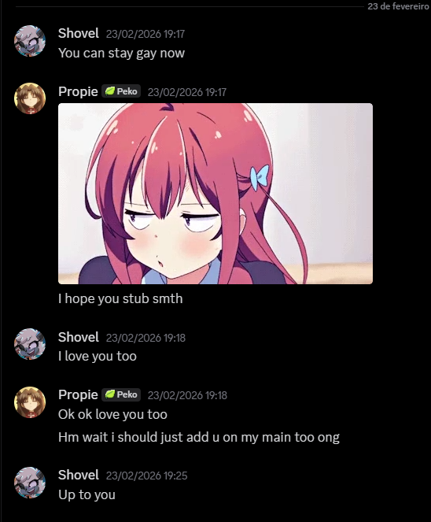
This was technically our first message on my main account!
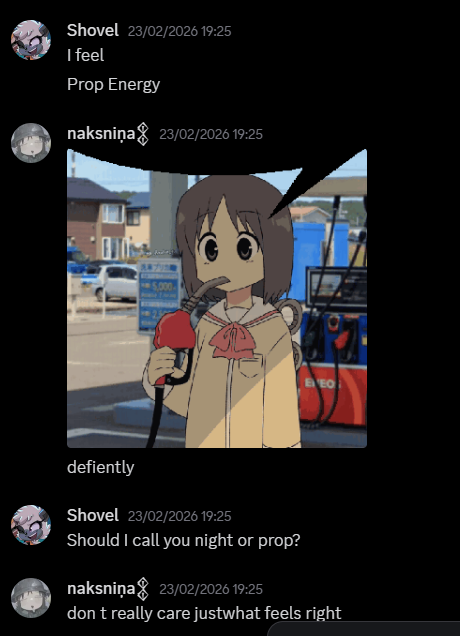
We basically only talk here so worth showing!
I tried looking for things on my old acc but I can find anything. its a shame. I wish we had it saved
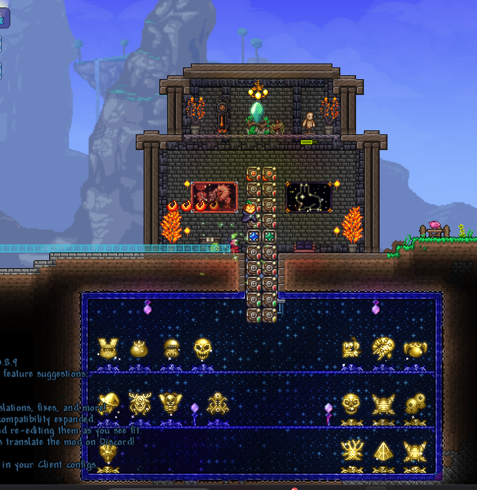
the problem of you making things so good is that it makes it seem that I like them because they are good. but the real reason is because you made them.
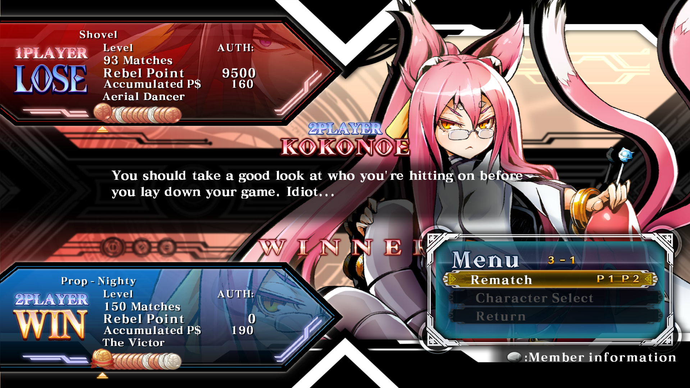
This is the first time you won against me on blazblue.
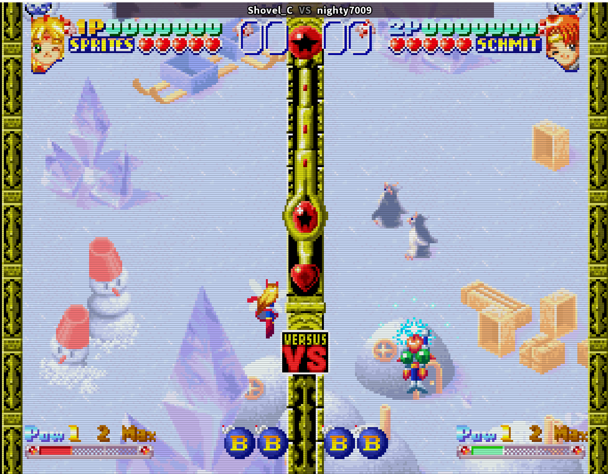
I am still the best twinker.
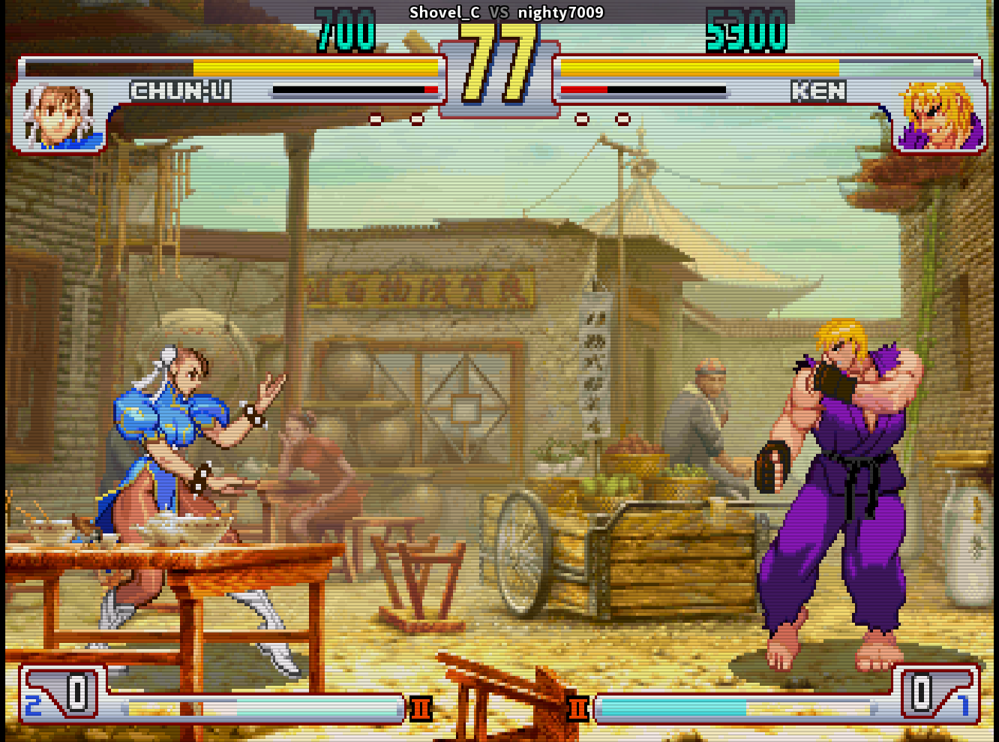
We should play more third strike btw, seeing the replay made me remember that the game is fun, I wonder how the "koko-fundamentals" will change your playstyle
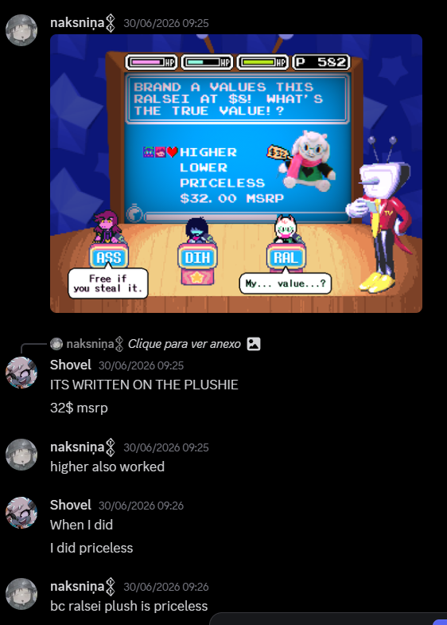
I remember when you marathoned deltaruned. we did like 3 10hour calls in a row. Kai actually got jealous of you a bit when we did that, understandable. thank you for streaming all of it for me
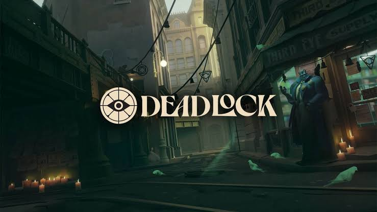
I will be honest, I dont have a good image to represent us playing deadlock, but I want to thank you for playing it with me
Its my gallery so I am picking my favorites.
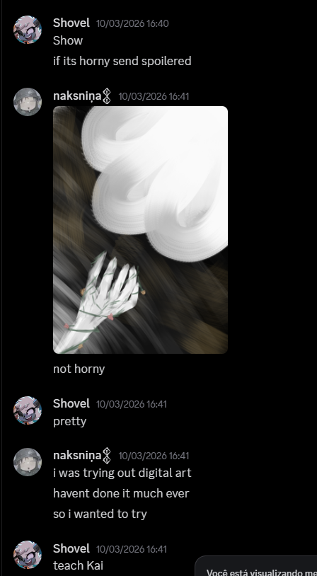
I dont think this is the actual first drawing you sent me. nor was it the most memorable. but I think its worth it. its the first drawing on our convo
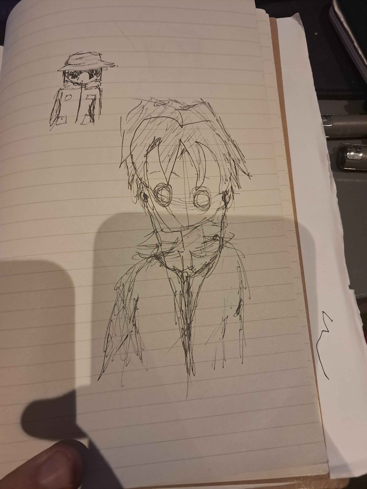
Just liked this one
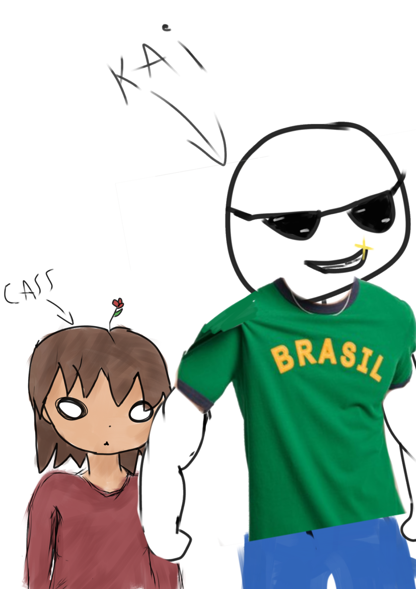
lowkey I started crying looking at this drawing. you put a flower on my head. You are the best. thank you for being my friend.
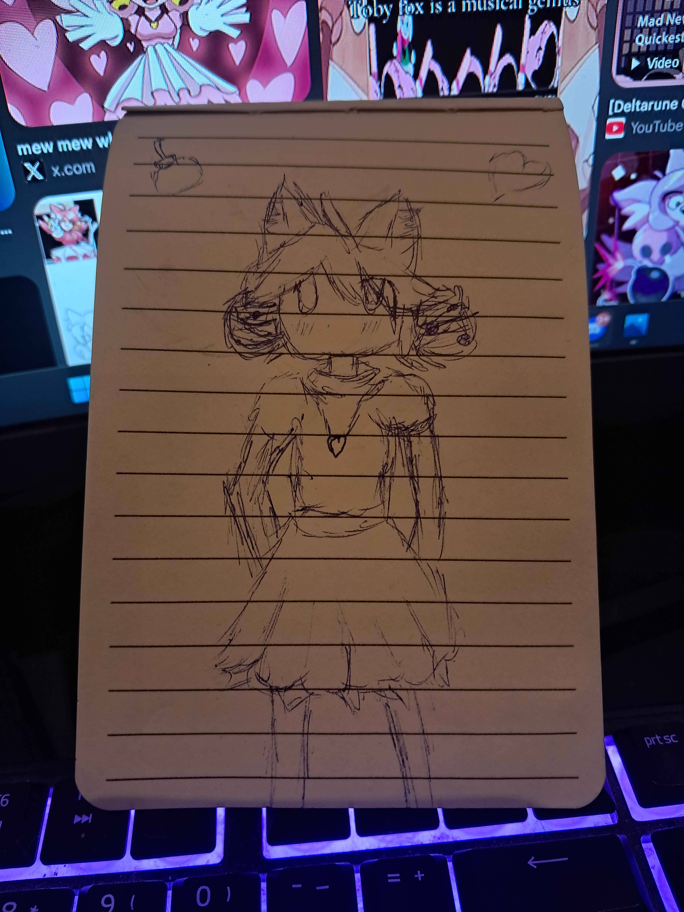
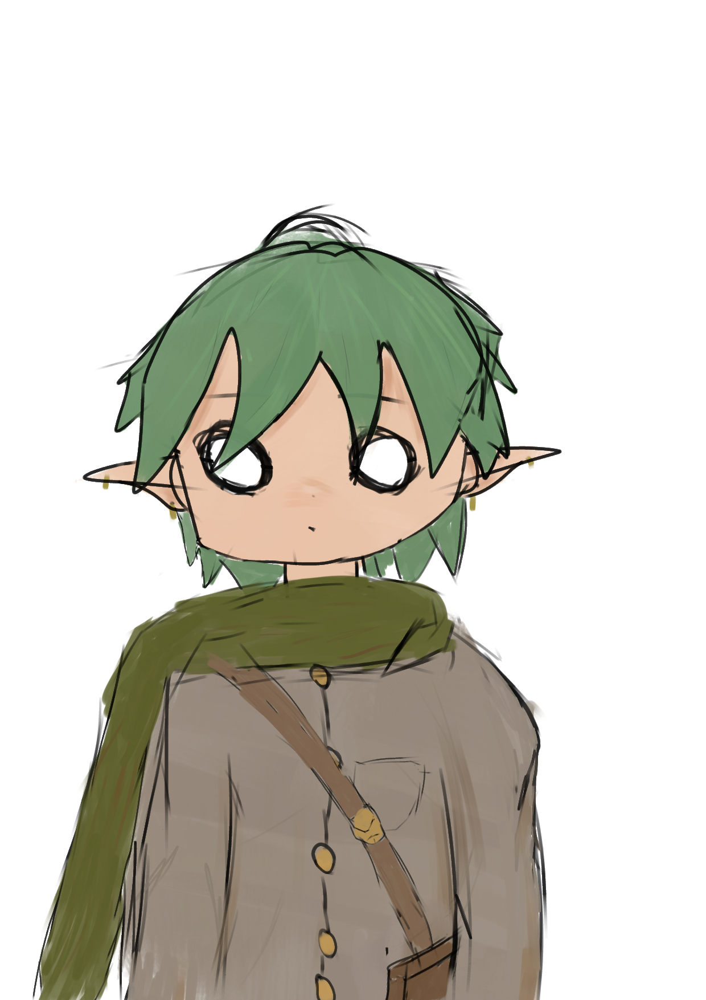
Believe it or not. this drawing stuck with me. Its how I think you look like while talking
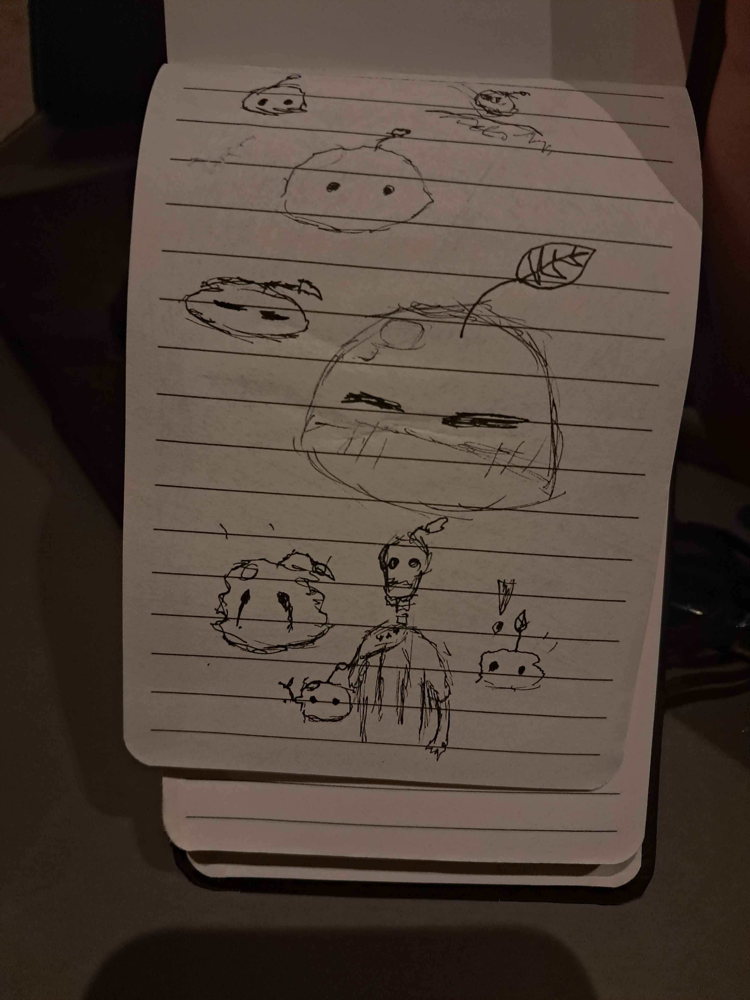
Another drawing that stuck with me, I loved the expressions so much
I considered a few different things, writting a letter with my terrible handwritting, drawing both of us with my terrible drawing skills, but I decided to make a simple webpage because its easy af to do it and it feels like something that fits me. I could've added so many more things but Its getting late and I need to make food
I really want this to just be a moment on our friendship where you can point to and say "Cass you are a stupid forgetfull bimbo, You forgot the birthday of your best friend you stupid fish" and not a moment of we growing apart from each other. you are really really important to me. losing you because of this stupid mistake would be my nightmare. I love you twin.